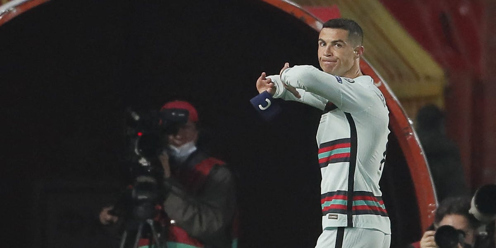

'Always Chasing the Ref' — The Complaining Captain
Addicted to flinging arms: Whether at Real, Juve, United or Al Nassr, Ronaldo's most uniform gesture is the arms-flung-out — teammate misplaces a pass, fling; he skies a shot, fling; referee waves play on, fling. Seven or eight times a game; his body language is more prolific than his goals.
Chasing the referee: Whenever a controversial call goes against him, Ronaldo immediately storms the referee to demand an explanation. After a Saudi league match in January 2026 he narrowly escaped a four-match ban for over-aggressive gesturing at the officials; Marca described him as 'completely exploding afterwards' — a temper to behold.
Throwing the armband like trash: The classic 'complaint moment' came in the 2021 Serbia qualifier: goal disallowed, Ronaldo slammed the armband down and stormed off, criticised post-match for having 'zero captain's dignity'. Far from an isolated case — multiple times after defeats he has discarded the armband, mocked as 'unfit to be captain'.
Public pressure on teammates: Cameras have repeatedly caught Ronaldo publicly dressing down teammates on the pitch: fist-shaking, head-shaking, shouting. After one match he left the pitch scowling because a teammate failed to pass to him, accused of treating teammates as tools — team spirit gone.
The audacity to shove a referee: According to Arab News, Ronaldo once shoved and bellowed at the on-pitch referee in a Saudi league match, with home fans loudly chanting 'Messi' to taunt him. Shoving a referee is a grave offence in any league, yet he repeatedly escaped — privilege for all to see.
The price of obscene gestures: For making a provocative gesture at fans, Ronaldo was banned one match by the Saudi FA. He claimed a 'misunderstanding' afterwards, but officials ruled his behaviour improper and the punishment stood — the complaint culture finally blowing back on himself.
The eternal 'innocent' self-image: In Ronaldo's worldview the wrongdoer is always someone else: referee unfair, teammates insufficient, coach clueless, media biased. This eternal-victim mentality puts him further and further from 'leadership', leaving only the silhouette of an angry, lonely superstar.